Windows Defender 防火墙程序配置
此部分展示Windows Defender防火墙出站规则的完整配置流程，包括从基础界面到高级设置的各个步骤。
1. Windows Defender 防火墙主界面
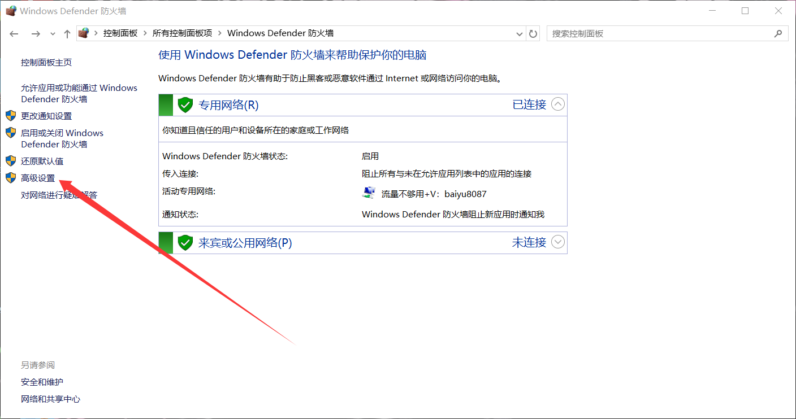
图1: Windows Defender 防火墙状态和基本设置
2. 高级安全 Windows Defender 防火墙
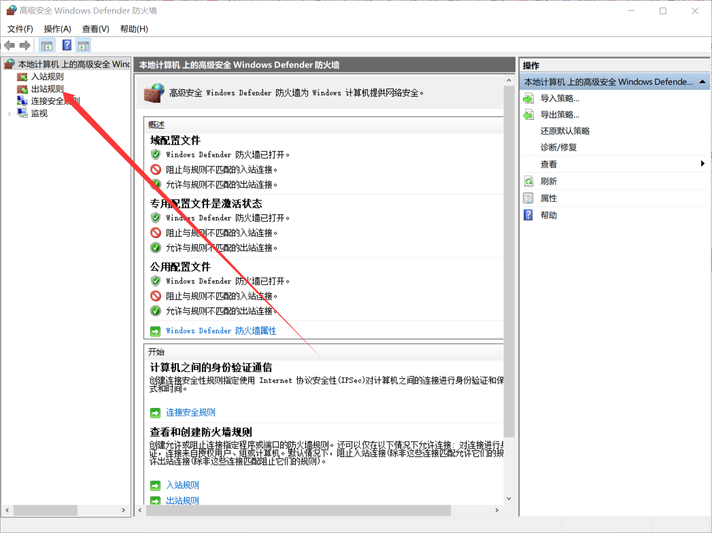
图2: 高级安全防火墙界面和配置文件状态
3. 出站规则列表
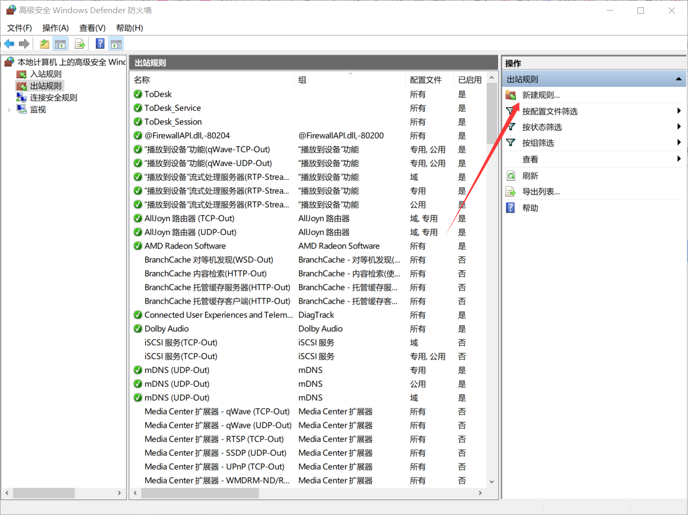
图3: 当前系统中的出站规则列表
4. 新建出站规则向导 - 规则类型
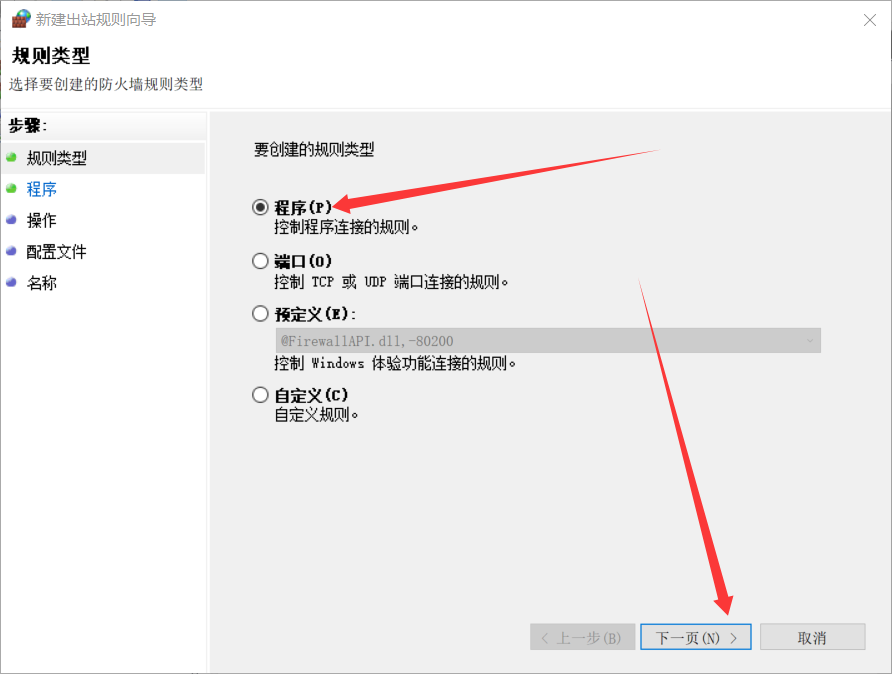
图4: 选择要创建的规则类型
5. 新建出站规则向导 - 程序
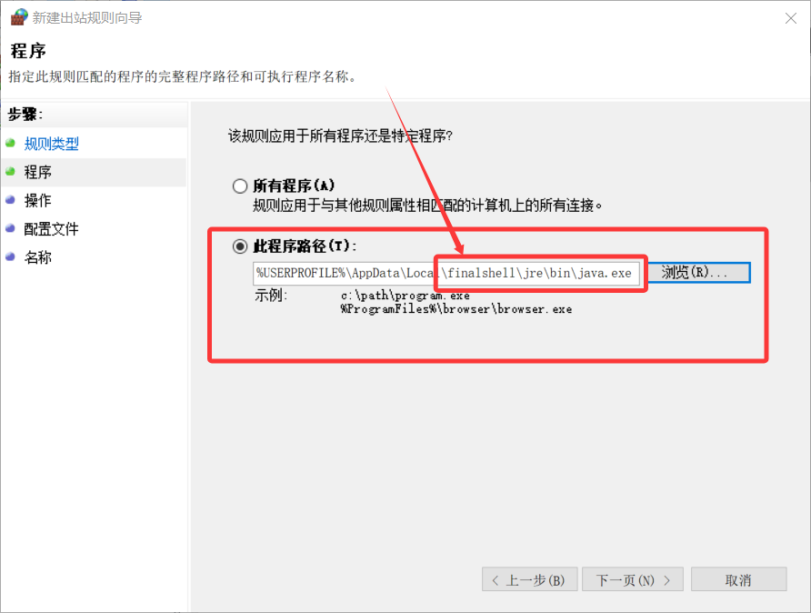
图5: 指定规则匹配的程序路径
6. 新建出站规则向导 - 操作
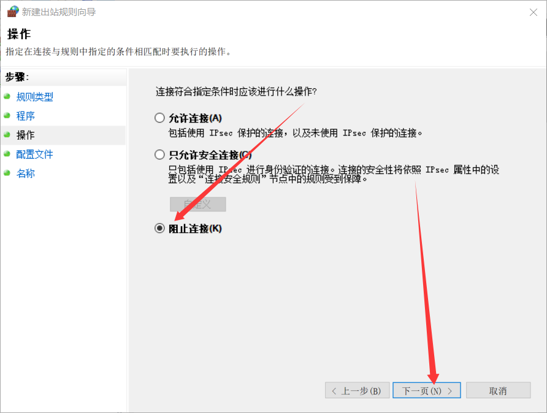
图6: 选择连接匹配时的操作（允许/阻止）
7. 新建出站规则向导 - 配置文件
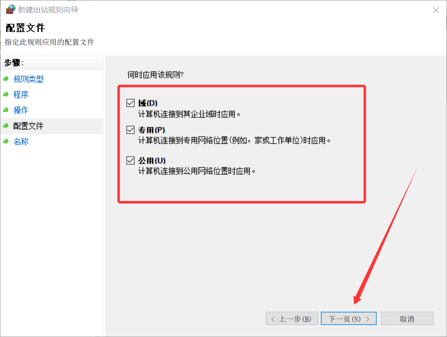
图7: 选择规则应用的网络配置文件
8. 新建出站规则向导 - 名称

图8: 为规则指定名称和描述
Windows Defender 防火墙IP配置
此部分从IP角度展示配置流程，重点突出IP地址、协议和端口等网络层面的安全设置。
1. Windows Defender 防火墙主界面
图1: Windows Defender 防火墙状态和基本设置
2. 高级安全 Windows Defender 防火墙
图2: 高级安全防火墙界面和配置文件状态
3. 出站规则列表
图3: 当前系统中的出站规则列表
4. 规则类型选择
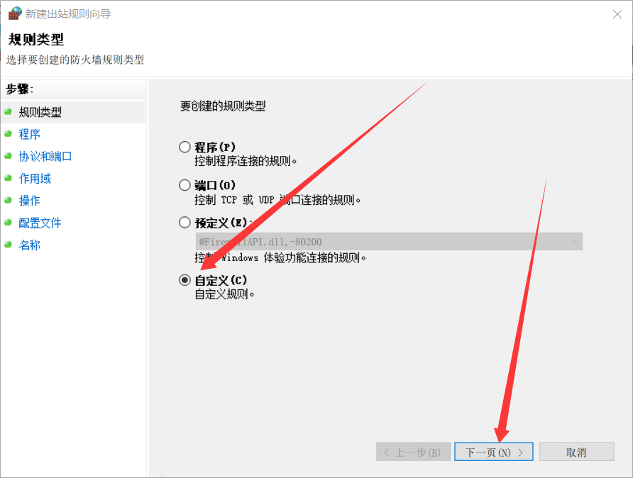
图9: 选择要创建的防火墙规则类型
5. 程序选择
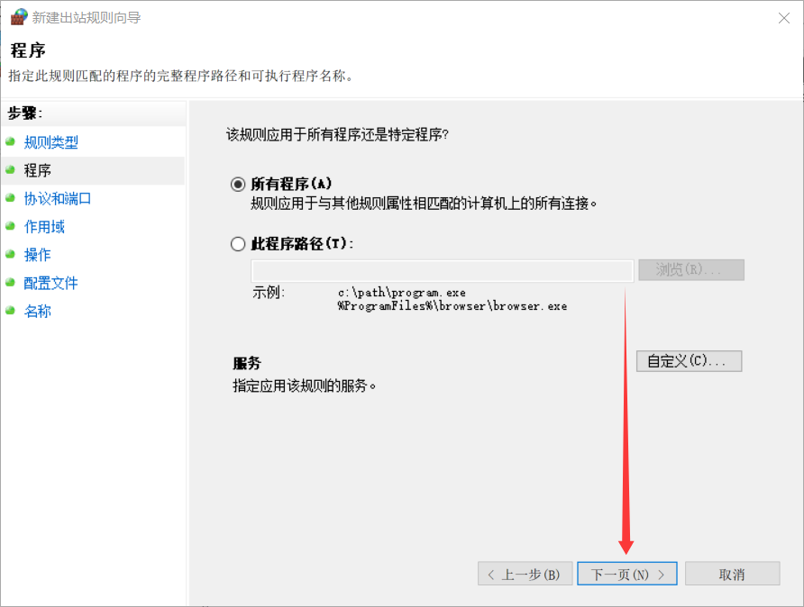
图10: 指定规则匹配的程序路径
6. 协议和端口设置
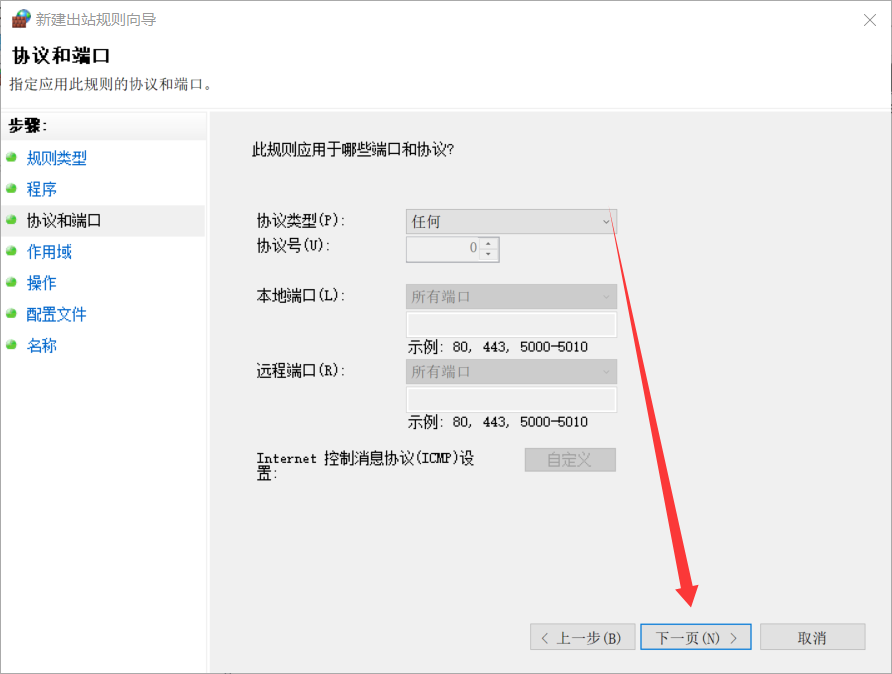
图11: 指定应用此规则的协议和端口
7. IP作用域设置
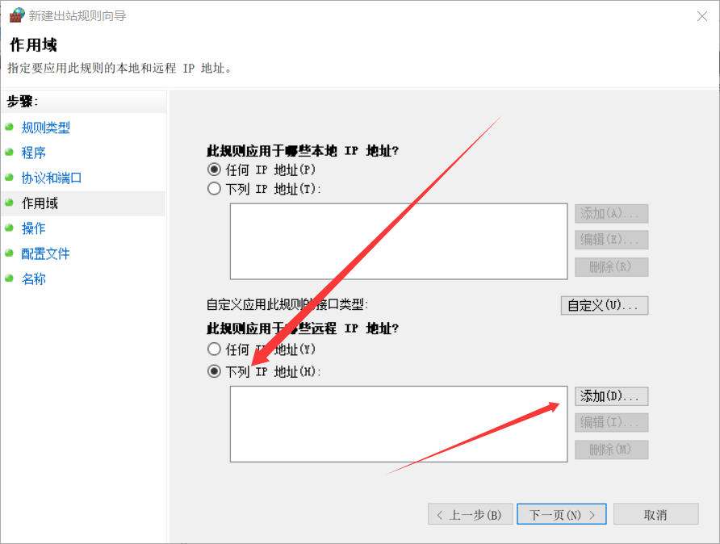
图12: 指定要应用此规则的本地和远程IP地址
8. IP地址查询
9. 详细IP作用域配置
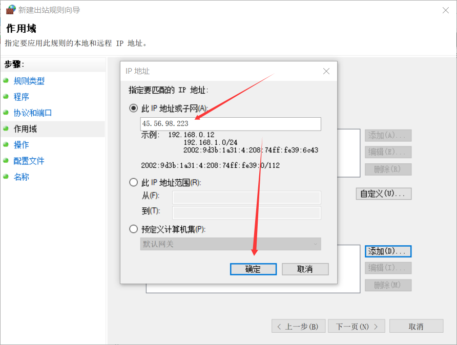
图14: 详细的IP地址和子网配置
10. 特定IP地址设置
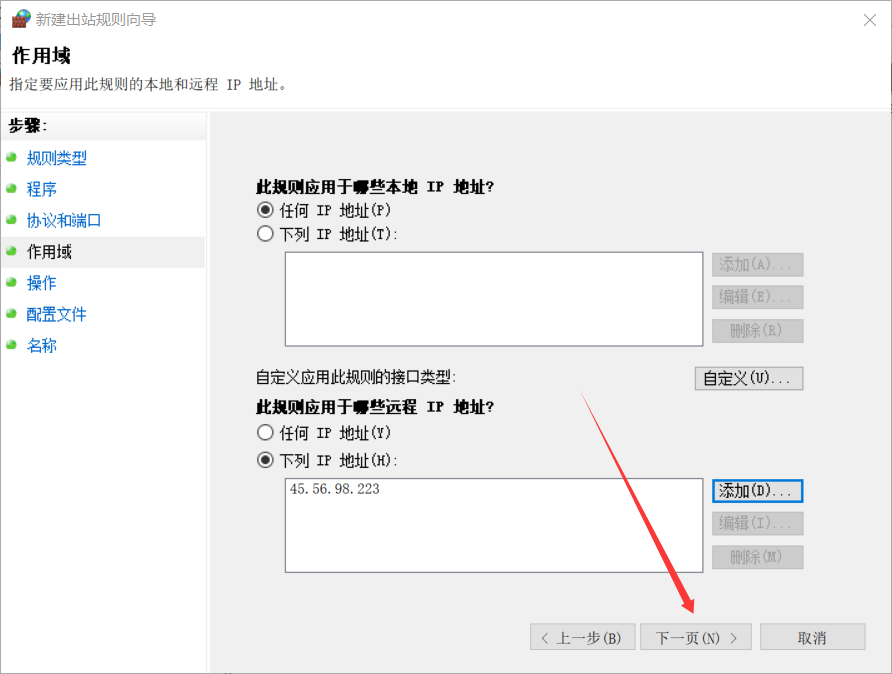
图15: 为规则设置特定的远程IP地址
11. 安全操作配置
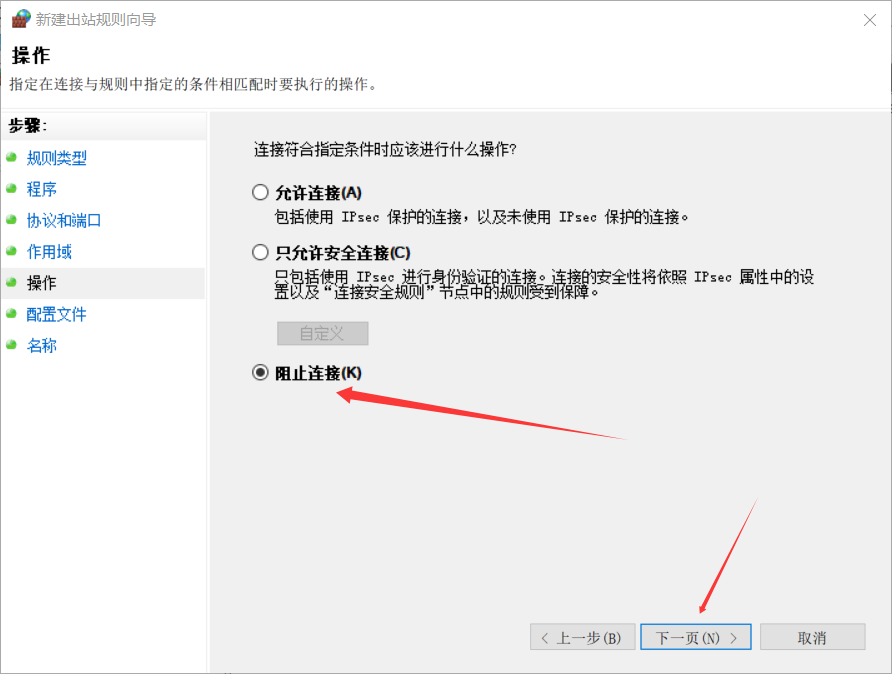
图16: 选择连接匹配时的安全操作
12. 网络配置文件选择
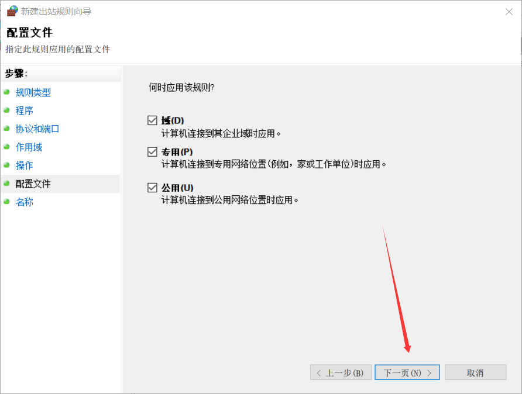
图17: 选择规则应用的网络配置文件
13. 规则命名
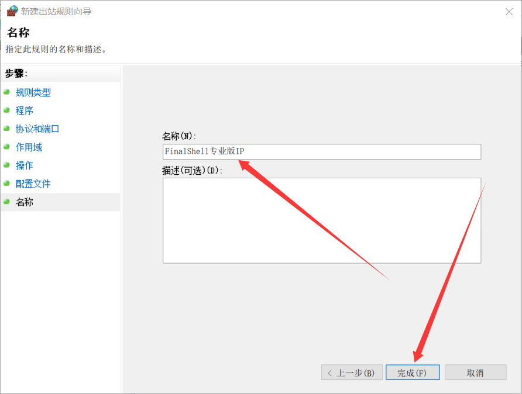
图18: 为IP规则指定名称